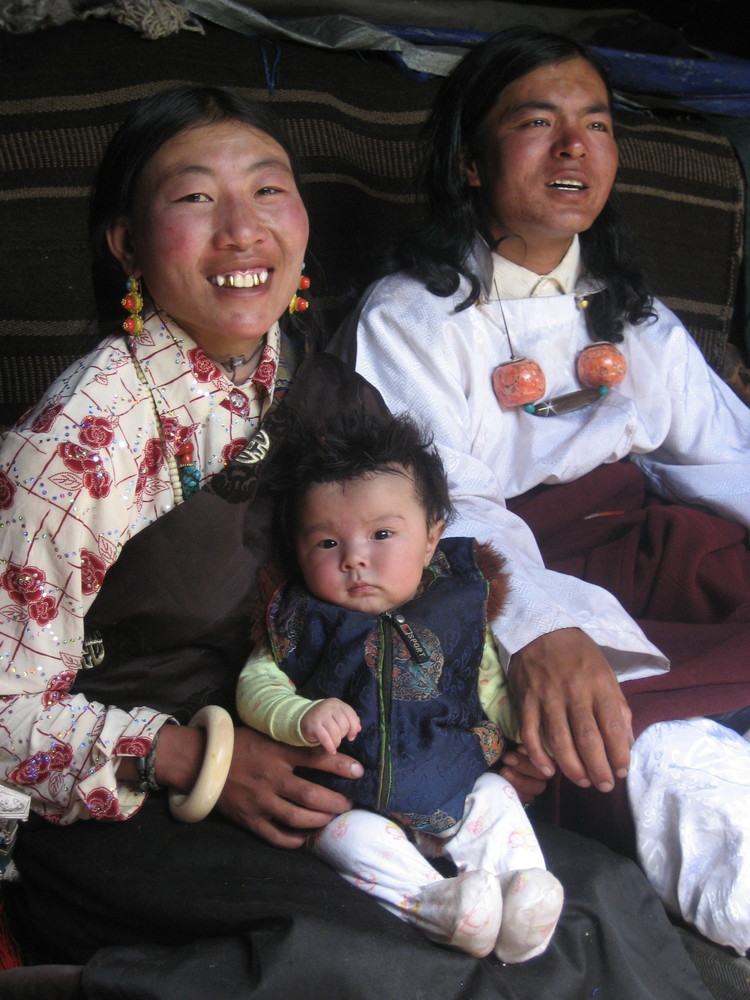
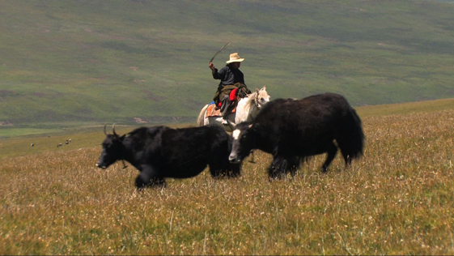
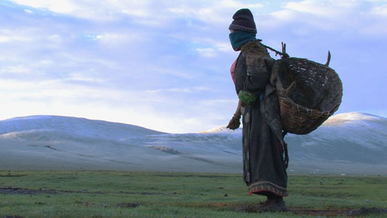
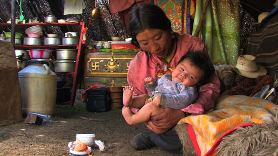
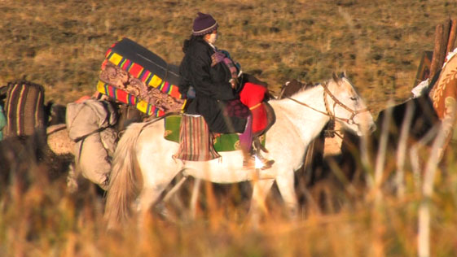
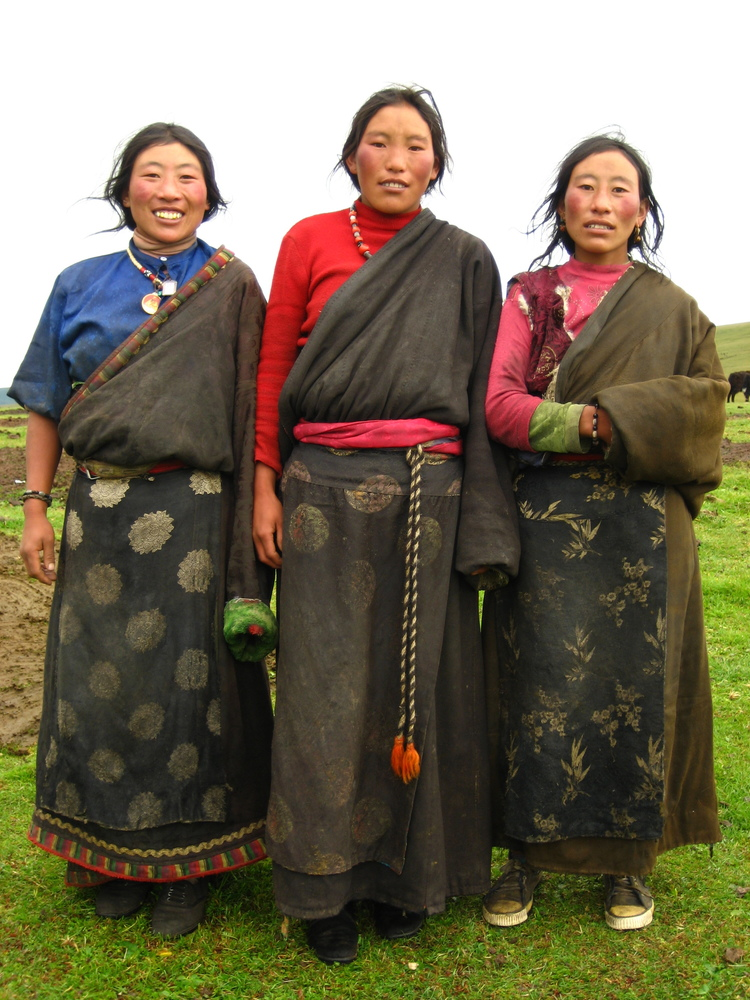

Filmed in the high grasslands of eastern Tibet, with unprecedented access to a place seldom visited by outsiders, Summer Pasture is a rare and intimate glimpse into the life of a young couple and their infant daughter during a time of great transition. Locho and Yama are nomadic herders who carve their existence from the land, as their ancestors have for generations. But now, as traditional nomadic life confronts rapid modernization, Summer Pasture captures a family at a crossroads, ultimately revealing the profound sacrifice they will make to ensure their daughter's future.
Lynn True: I studied architecture in college, which stressed approaching work with a combination of things in mind such as history, politics, visual art, sociology and design. At one point, I took a video class and fell in love with the whole documentary process. It reminded me of architecture in so many ways--reconciling the way a story is told; structuring how one navigates information, considering the existing context; designing the look and feel of the experience. You really are "building" a film from the ground up. But it felt even more engaging than architecture because of all the personal relationships that come about from the process--from working with your film subjects, to colleagues in the field and in the edit room, to audiences who eventually see and respond to the film itself. After I graduated, I immediately began working on various documentary projects and eventually got to start making my own films.
Nelson Walker: When I was in college, I was on track to go to medical school. On a whim I took an internship at Providence Pictures, a documentary film company that makes films for Discovery Channel, History Channel, and PBS's NOVA. It was a truly amazing experience; I had the opportunity to become a lay-expert on everything from dinosaur coprolites to deciphering the Maya code. I loved it so much that I put my plans for medical school on hold, and continued to work as a writer at Providence Pictures even after college. The more I wrote, the more I became interested in the craft of storytelling, which inspired me to enroll in the MFA program at Columbia. That program is actually geared more toward fiction filmmaking, but while I was in school I continued to make documentaries, and I haven't stopped.
LT & NW: In 2006 we traveled to the Kham region of Tibet as documentarians for a research project launched by the University of Virginia and an NGO called Machik that works with local communities on the Tibetan plateau. During the three months we spent in Kham, we came across Tibetans from all walks of life, but were particularly struck by the nomads we met. Their lives were totally different from ours. They lived so efficiently, surviving almost entirely off the land and in constant adaptation with their environment. It was as if they had taken a divergent and more sustainable fork in the evolution of humankind. We were curious, and we wanted to learn more. On the same trip, we were training Tibetans in basic filmmaking techniques to document their own experiences. Through one of our training sessions we met Tsering Perlo, an emerging Tibetan filmmaker who was in the process of starting his own NGO dedicated to teaching filmmaking to young Tibetans. He had grown up as a nomad in the remote community of Dzachukha. We hit it off almost immediately, and decided to join forces the following summer to work on a project together. At the time, we had little idea of what this project would be, other than that we would film it in Dzachukha and that we wanted it to be an honest and intimate portrait of nomad life.
LT & NW: Summer Pasture was filmed in a remote valley in Dzachukha, over 15,000 feet above sea level. It took three days by car from the nearest airport to get to Dzachukha, and then another six hours on horseback to reach Locho and Yama's encampment. There was no electricity, no cell phone service, none of the comforts we had taken for granted back home. For the three months of filming, we essentially lived as nomads: We fetched our own water from the river, cooked our meals over a yak-dung fire, confronted the constantly violent shifts in weather, and basically experienced life as Locho and Yama lived it. Preparing for a shoot in such an extreme environment was a challenge, as was the filming itself, but at the time, we were totally unaware that the greatest challenge was still ahead. We returned to the States with over 200 hours of footage, of which only a couple of hours had been fully translated. We spread the word throughout the New York Tibetan community that we were in need of translators. Dozens of people watched our footage, but nobody could understand the nomadic dialect, not even people from the same general region within Kham. Eventually we found two young Tibetans who could translate--one who was attending Duke University (the first Tibetan student ever at that university) and another living in China. They were great, but the process was painstaking. We would send them time-coded DVDs of raw footage and weeks later they would e-mail us transcripts with a few hours worth of material, from which we'd cut and paste the dialogue into subtitles in our editing program. After several months of very slow progress, we stumbled upon a different strategy. When we first returned from Tibet, Perlo had put us in touch with a small group of Tibetans from Dzachukha who were living in Queens. Unfortunately most of them spoke limited English, so we hadn't considered them as translators. Then, a young man from Dzachukha whom we had initially met suggested that he could work with his wife. She was from a different region of Tibet, but spoke nearly perfect English. Together they would watch the raw footage in the nomadic dialect, then discuss the meaning in a more common dialect of Tibetan, and finally she would translate that into English. It was like a complex game of telephone, but incredibly accurate and effective. We ended up finding a few pairs of individuals to work like this, and finally managed to get all of our footage translated and subtitled. The whole process took over a year and a half.
 LT & NW: When we set out to make the film, we had very little idea of what it was going to be. We knew we were going to spend several months living in a nomad region and would somehow document the experience, but that's about it. Given all the unknowns, we directed our pre-production efforts toward developing a flexible process that would enable us to adapt to a wide range of circumstances. This meant putting our trust in observation and encouraging our subjects to be invested in the filmmaking process.
Our first stroke of good luck came on our way out to the pasture, when we met Locho. He had such a magnetic personality that we immediately knew we wanted to spend more time with him. When he introduced us to his wife, Yama, we were equally taken by her personality, which is so different from his. And once we met their baby daughter, we knew this was a special young family. They were open to us filming and very generous with their thoughts and opinions, so we became interested in more deeply exploring their relationship and daily struggles. We began to film Locho and Yama going about their daily lives, and Perlo facilitated interviews with them. We regularly screened our dailies for Locho and Yama, and invited them to make suggestions about what to include in the film. During the shoot, we knew we were getting interesting material, but had very little idea of what the story would be. When we returned to New York, we still only had a general idea of what was in our footage, and couldn't really access it until it was fully translated. Although the translation process was arduous and often frustrating, it was a time of constant discovery. Gradually, the pieces of our film began to emerge. Rather than attempting to assemble these into some sort of dramatic arc that didn't exist, we took an associative approach to storytelling and tried to let the details spill out organically, as they would in real life. In the end, we think we were able to accomplish what we had set out to do and more: to make a film that honestly and intimately portrays nomad life, but also offers an even more universal story of a family--with all the ups and downs of marriage, money, illness, infidelity--that not just Tibetans, but also audiences around the world could relate to.
LT & NW: When we first started screening Summer Pasture, we weren't quite sure what to expect. We had made a film that we sincerely believed in, but also one we knew didn't necessarily fit in with what is typically available to movie-goers, so we were unsure what general audiences would think. It's been very exciting and a bit of a surprise to see that so many people from such a wide variety of backgrounds have had such a positive response. Over the course of the film, audiences seem to develop a closeness to Locho and Yama, and recognize that while they may lead very different lives, they share many of the same concerns. The film has played particularly well for Tibetan audiences, which makes us very happy. They have appreciated seeing a film about Tibet that for once doesn't take just a religious or political approach to the culture. For Tibetans living abroad, it is a window onto life in Tibet, and in many instances, an opportunity to see the life they've never had the chance to really experience. The most gratifying response, however, has come from Locho and Yama, who watched a rough cut of the film with Perlo and loved it!
LT & NW: We are great admirers of observational filmmaking. One of our big inspirations has come from the films of Albert and David Maysles and their many great collaborators at Maysles Films. We actually edited most of Summer Pasture in an office in the basement of the Maysles Cinema, a small community theater in Harlem that shows documentary films, so the works being shown upstairs have also been a constant source of productive distraction! Some other films that have influenced us include Lorang's Way by David and Judith MacDougall; Celso and Cora by Gary Kildea; Hoop Dreams by Steve James; Love and Diane by Jennifer Dworkin; and the Insightshare Participatory Video methodology developed by Nick and Chris Lunch.
